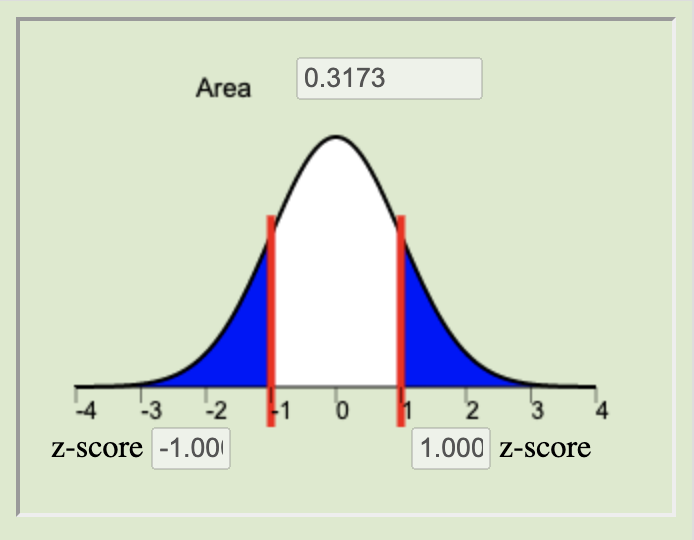
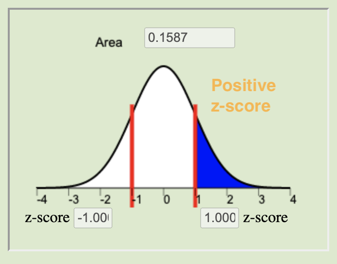
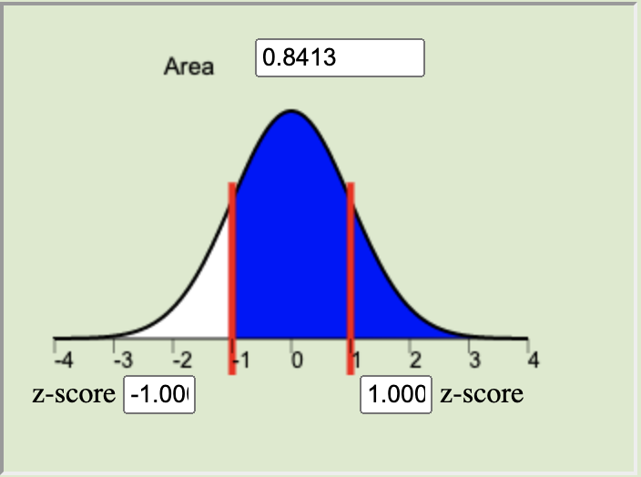

Lesson 15: Review for Exam 2
Unit 2 introduced you to hypothesis testing and confidence intervals as well as five inferential methods in statistics. Review the Lesson Outcomes and Lesson Summaries from each lesson to prepare for the Unit 2 Exam. For any outcomes where you need further review, return to the corresponding lesson and study those topics in more depth.
Lesson 9
Outcomes
- Recognize when a one mean (sigma known) hypothesis test is appropriate
- Define a P-value (one-sided and two-sided)
- Perform a hypothesis test for a single mean with σ known using the
following steps:
- State the null and alternative hypotheses
- Calculate the test-statistic by hand
- Determine the P-value using the normal distribution
- Assess statistical significance in order to state the appropriate conclusion for the hypothesis test
- Check the requirements for the hypothesis test
- Interpret Type I and II errors in the context of a hypothesis test
- Explain the meaning of the level of significance (\(\alpha\))
Summary
A one mean (sigma known) hypothesis test is appropriate for testing a hypothesized value of the mean of a population for quantitative data where \(\sigma\), the population standard deviation, can reasonably be assumed to be known exactly.
A \(P\)-value gives the probability of observing a test statistic at least as extreme as the one observed, assuming the null hypothesis is true.
The steps to perform a hypothesis test for one mean when sigma is known are:
First, state the hypotheses. The null hypothesis (\(H_0\)) is the foundational assumption about a population and represents the status quo that we assume to be true. It is a statement of equality (\(=\)). The alternative hypothesis (\(H_a\)) is a different assumption about a population and is a statement of inequality (\(<\), \(>\), or \(\ne\)). The alternative hypothesis is believed to be true only in the case that sufficient evidence is presented.
The test statistic for the one mean (sigma known) hypothesis test is given by the equation \[ z = \frac{\bar{x} - \mu}{\frac{\sigma}{\sqrt{n}}} \]
The \(P\)-value is calculated by finding the area under the normal distribution curve that is more extreme (farther away from the mean) than the z-score. The alternative hypothesis tells us whether we look at both tails or only one. The possible scenarios are depicted below.
Left-tailed
\(H_a: \mu < 0\)Two-tailed
\(H_a: \mu \neq 0\)Right-tailed
\(H_a: \mu > 0\)




The level of significance (\(\alpha\)) controls the probability of committing a Type I Error. It is the standard for determining whether or not the null hypothesis should be rejected. Typical values for \(\alpha\) are \(0.05\), \(0.10\), and \(0.01\). If the \(P\)-value is less than \(\alpha\) we reject the null. If the \(P\)-value is not less than \(\alpha\) we fail to reject the null.
The results of a one mean (sigma known) test are meaningful when (1) the sample of data can be considered to be representative of the population and (2) the sampling distribution of the sample mean can be considered to be normal. Recall from Lesson 6 that the sampling distribution of the sample mean can be considered normal whenever the population data is normal or when the sample size is sufficiently large, i.e., \(n\ge 30\).
A Type I error is committed when we reject a null hypothesis that is, in reality, true. A Type II error is committed when we fail to reject a null hypothesis that is, in reality, false.
The level of significance, \(\alpha\), gives the probability of committing a Type I error. The probability of a Type II Error is called \(\beta\), but \(\beta\) is not discussed in this course. However, the probabilities of a Type I Error (\(\alpha\)) and a Type II Error (\(\beta\)) are inversely related, in other words, as one increases the other is decreased.
Lesson 10
Outcomes
- Recognize when a one mean (sigma known) confidence interval is appropriate
- Calculate the sample size required to achieve a specified margin of error and level of confidence
- Explain the meaning of a level of confidence
- Create a confidence interval for a single mean with σ known using
the following steps:
- Find the point estimate
- Calculate the margin of error for the given level of confidence
- Calculate a confidence interval from the point estimate and the margin of error
- Interpret the confidence interval
- Check the requirements for the confidence interval
- Explain how the margin of error is affected by the sample size and level of confidence
Summary
The margin of error gives an estimate of the variability of responses. It is calculated as \(\displaystyle{m=z^*\frac{\sigma}{\sqrt{n}}}\) where \(z^*\) represents a calculated z-score corresponding to a particular confidence level.
A confidence interval is an interval estimator used to give a range of plausible values for a parameter. The width of a confidence interval depends on the chosen confidence level (and its corresponding value of \(z^*\)) as well as the sample size (\(n\)). This is the equation for calculating confidence intervals: \[\displaystyle{\left(\bar x-z^*\frac{\sigma}{\sqrt{n}},~\bar x+z^*\frac{\sigma}{\sqrt{n}}\right)}\]
The sample size formula allows us to estimate the number of observations required to obtain a specific margin of error. \(\displaystyle{n=\left(\frac{z^*\sigma}{m}\right)^2}\)
Lesson 11
Outcomes
- Recognize when a one mean (sigma unknown) inferential procedure is appropriate
- Create numerical and graphical summaries of the data
- Perform a hypothesis test for one mean (sigma unknown) using the
following steps:
- State the null and alternative hypotheses
- Calculate the test-statistic, degrees of freedom and P-value using software
- Assess statistical significance in order to state the appropriate conclusion for the hypothesis test
- Check the requirements for the hypothesis test
- Create a confidence interval for one mean (sigma unknown) using the
following steps:
- Calculate a confidence interval for a given level of confidence using software
- Interpret the confidence interval
- Check the requirements of the confidence interval
- State the properties of the Student’s t-distribution
Summary
In practice we rarely know the true standard deviation \(\sigma\) and will therefore be unable to calculate a z-score. Student’s t-distribution gives us a new test statistic, \(t\), that is calculated using the sample standard deviation (\(s\)) instead. \[\displaystyle{ t = \frac {\bar x - \mu} {s / \sqrt{n}} }\]
The \(t\)-distribution is similar to a normal distribution in that it is bell-shaped and symmetrical, but the exact shape of the \(t\)-distribution depends on the degrees of freedom (\(df\)). \[df=n-1\]
*You will use Excel to carry out hypothesis testing and create confidence intervals involving \(t\)-distributions.
Lesson 12
Outcomes
- Recognize when a mean of differences (two dependent samples) inferential procedure is appropriate
- Create numerical and graphical summaries of the data
- Perform a hypothesis test for the mean of differences (two dependent
samples) using the following steps:
- State the null and alternative hypotheses
- Calculate the test-statistic, degrees of freedom and P-value of the test using software
- Assess statistical significance in order to state the appropriate conclusion for the hypothesis test
- Check the requirements for the hypothesis test
- Create a confidence interval for the mean of differences (two
dependent samples) using the following steps:
- Calculate a confidence interval using software
- Interpret the confidence interval
- Check the requirements of the confidence interval
Summary
The key characteristic of dependent samples (or matched pairs) is that knowing which subjects will be in group 1 determines which subjects will be in group 2.
We use slightly different variables when conducting inference using dependent samples:
Group 1 values: \(x_1\) Group 2 values: \(x_2\) Differences: \(d\) Population mean: \(\mu_d\) Sample mean: \(\bar d\) Sample standard deviation: \(s_d\)
When conducting hypothesis tests using dependent samples, the null hypothesis is always \(\mu_d=0\), indicating that there is no change between the first population and the second population. The alternative hypothesis can be left-tailed (\(<\)), right-tailed(\(>\)), or two-tailed(\(\ne\)).
Lesson 13
Outcomes
- Recognize when the difference of means (two independent samples) inferential procedure is appropriate
- Create numerical and graphical summaries of the data
- Perform a hypothesis test for the difference of means (two
independent samples) using the following steps:
- State the null and alternative hypotheses
- Calculate the test-statistic, degrees of freedom and P-value of the test using software
- Assess statistical significance in order to state the appropriate conclusion for the hypothesis test
- Check the requirements for the hypothesis test
- Create a confidence interval for the difference of means (two
independent samples) using the following steps:
- Calculate a confidence interval using software
- Interpret the confidence interval
- Check the requirements of the confidence interval
Summary
In contrast to dependent samples, two samples are independent if knowing which subjects are in group 1 tells you nothing about which subjects will be in group 2. With independent samples, there is no pairing between the groups.
When conducting inference using independent samples we use \(\bar x_1\), \(s_1\), and \(n_1\) for the mean, standard deviation, and sample size, respectively, of group 1. We use the symbols \(\bar x_2\), \(s_2\), and \(n_2\) for group 2.
When working with independent samples it is important to graphically illustrate each sample separately. Combining the groups to create a single graph is not appropriate.
When conducting hypothesis tests using independent samples, the null hypothesis is always \(\mu_1=\mu_2\), indicating that there is no difference between the two populations. The alternative hypothesis can be left-tailed (\(<\)), right-tailed(\(>\)), or two-tailed(\(\ne\)).
Whenever zero is contained in the confidence interval of the difference of the true means we conclude that there is no significant difference between the two populations.
Lesson 14
Outcomes
- Recognize when an Analysis of Variance (ANOVA) inferential procedure is appropriate
- Create numerical and graphical summaries of the data
- Perform a hypothesis test for ANOVA using the following steps:
- State the null and alternative hypotheses
- Calculate the test-statistic, degrees of freedom and P-value of the test using software
- Assess statistical significance in order to state the appropriate conclusion for the hypothesis test
- Check the requirements for the hypothesis test
- State the properties of the F distribution
Summary
ANOVA is used to compare the means for several groups. The hypotheses for the test are always: \[ \begin{align} H_0: & ~ \textrm{All the means are equal} \\ H_a: & ~ \textrm{At least one of the means differs} \end{align} \]
For ANOVA testing we use an \(F\)-distribution, which is right-skewed. The \(P\)-value of an ANOVA test is always the area to the right of the \(F\)-statistic.
We can conduct ANOVA testing when the following three requirements are satisfied:
- The data come from a simple random sample.
- The data are normally distributed within each group.
- This is considered met unless one or more of the groups has a strongly skewed distribution.
- The variance is constant.
- This is satisfied when the largest variance is not more than four
times the smallest variance.
- This is satisfied when the largest variance is not more than four
times the smallest variance.
Copyright © 2020 Brigham Young University-Idaho. All rights reserved.